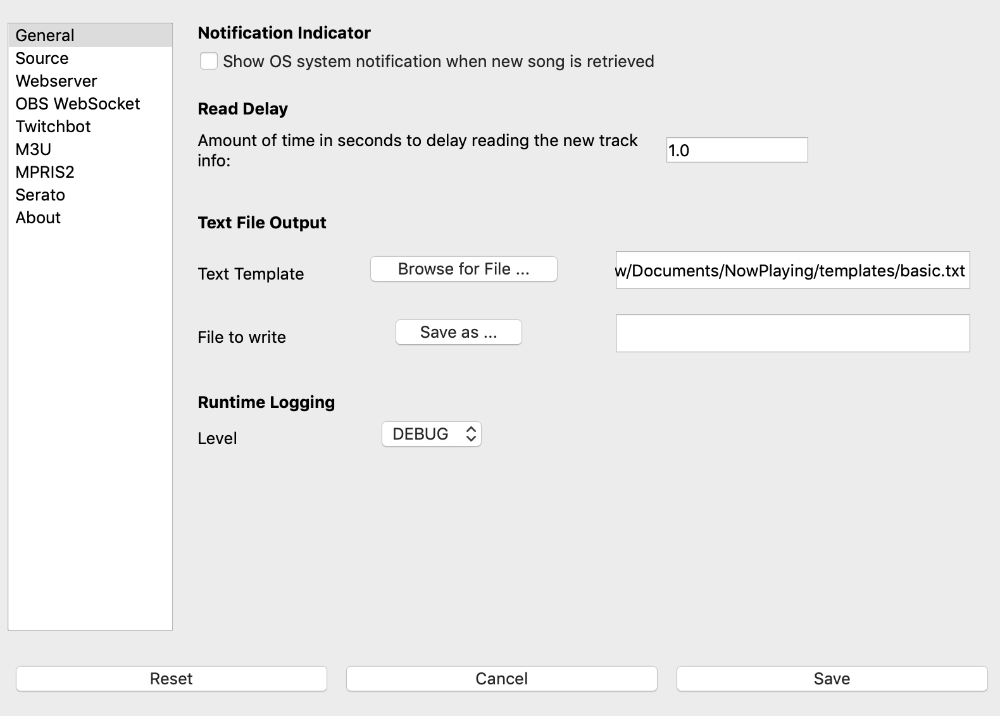

Settings¶
{kind=link}
Notification Indicator - Selecting this option will show a system notification when new track info is detected.
This is useful for verifying that the app is polling and retrieving data.
The notification displays the track information after detection.
Some software (such as Serato) will not show notifications in full screen mode. You may need to take it out of full screen node to see the notification.
Write Delay - The amount of time, in seconds, to delay writing the new track info once it’s retrieved. If not populated, it will default to 0 seconds.
A setting of zero will update the track info on-screen immediately as a new track is detected. This time value may be too soon for some DJ’s mixing style. Increasing the write delay allows for much more tuning.
Text Template - The Jinja2 template file that will be used when the song updates. See Templates for more information.
File to write - Name of the file where the app will write the track information. You can either pick a pre-existing file or the name of a new file.
Logging Level - By default, Now Playing will write debug logs into your Documents/NowPlaying/Logs directory. This option lets you control the level of logging.
At the bottom of every page will be the “Reset”, “Cancel”, and “Save” buttons:
Reset - Change all settings back to default.
Cancel - Close the window without saving.
Save - Save the settings